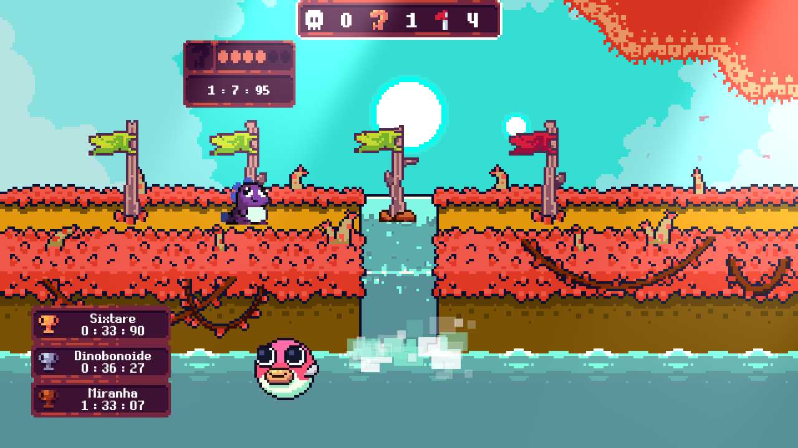
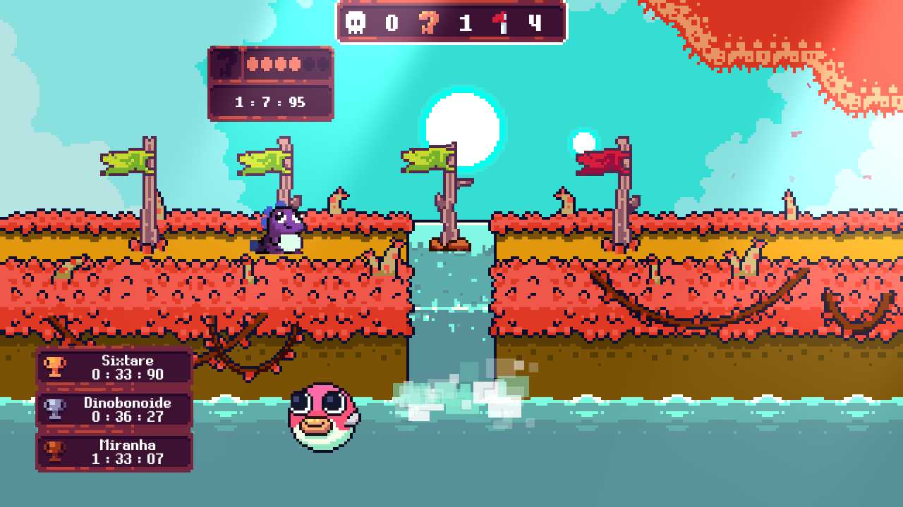

...ser a aventura mais heroica de sua vida! Só mesmo alguém muito maligno poderia ter a frieza de roubar os ovos de uma mamãe dinossauro indefesa e Dininho não pode deixar isso assim. Explore este mundo colorido e perigoso, resgatando todos os bebês indefesos. Mas cuidado, "Ele" estará te esperando ao final de cada estrada. Eu confio em você! Vá e seja o herói da Dinolândia.


 
